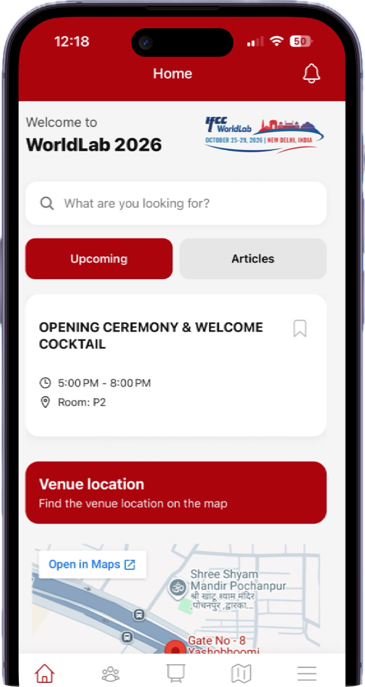
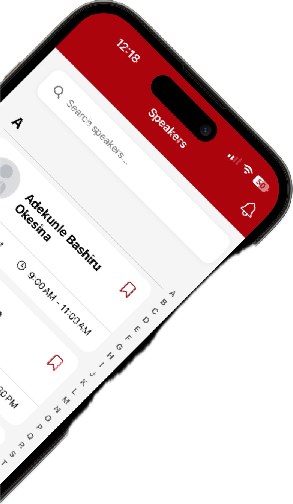
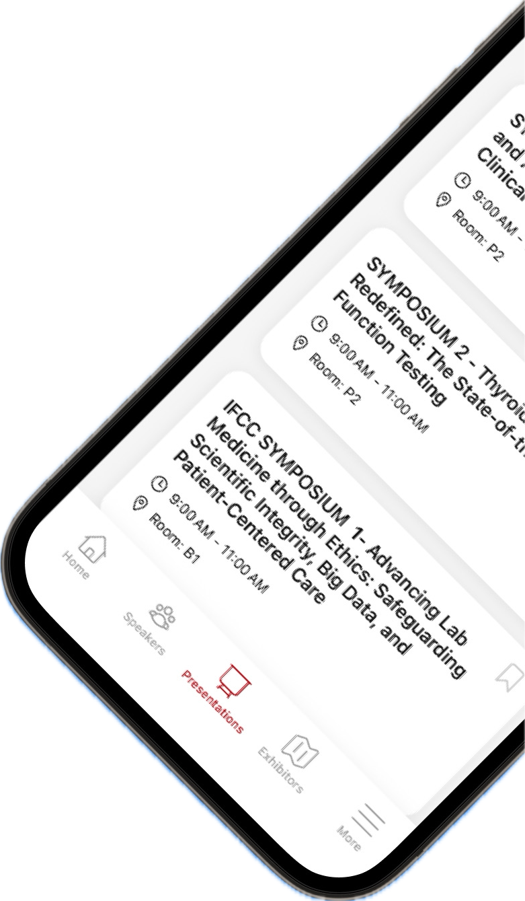
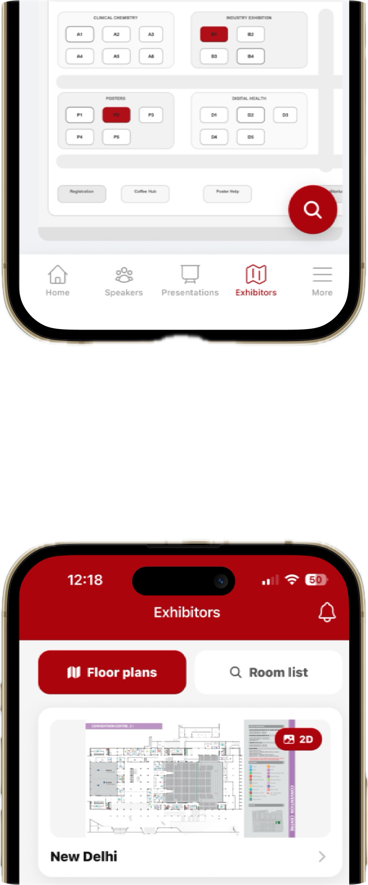

IFCC Events

PROJECT / JB


Over het project
IFCC Events is een compleet platform bestaande uit een Laravel/Filament backend en een Expo mobiele applicatie. Het stelt organisaties in staat om congressen, presentaties en interactieve plattegronden naadloos te beheren en te presenteren aan bezoekers.
- Filament CMS voor content- en kanaalbeheer
- Dynamische Expo app met offline caching
- Gepubliceerd in de App Store & Play Store
Kernonderdelen
Backend & API
Centraal beheer van alle data.
Mobiele App
Interactieve ervaring voor bezoekers.
Technologieën
Ontwikkeling: Backend (Filament)
API & Databeheer
Opbouw van resources voor artikelen, sprekers en presentaties. Gegevens worden via een beveiligde REST API ontsloten naar de app.
Auth & Rechten
Toegangsbeheer via QR-codes (Laravel Sanctum) en Spatie Permission voor rollen zoals Admin, Editor en Officer.
Page-Maker & Kaarten
Complexe pagina's en dynamische menu's opbouwen via datablokken, plus een tool om afbeeldingen om te zetten in interactieve 2D-kaarten.
Ontwikkeling: Frontend (Expo)
Dynamische Interface
De app genereert schermen op basis van dynamische componenten (headings, afbeeldingen, paragrafen) uit de API.
Offline Caching
Met stale-while-revalidate logica blijft eerder ingeladen content ook zonder stabiele internetverbinding soepel werken.
Navigatie & QR
Interactieve plattegronden voor oriëntatie en een QR-scanner om afgeschermde meetings of sprekersinformatie te openen.
Publicatie & Design
Iteratief Ontwerp
Ontworpen in nauw overleg met Digital Designers via meerdere feedbackrondes voor optimale UX/UI.
Bekijk het Figma OntwerpApp Store & Play Store
Cloud builds uitgevoerd met EAS. Na het doorlopen van testfases (TestFlight/Internal Tracks) en compliance checks succesvol gelanceerd op beide platformen.